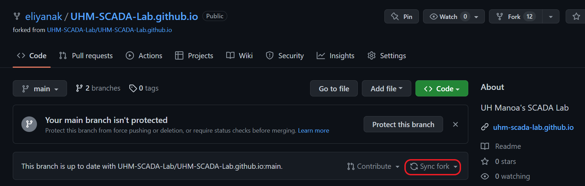
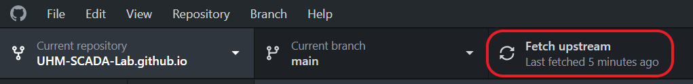
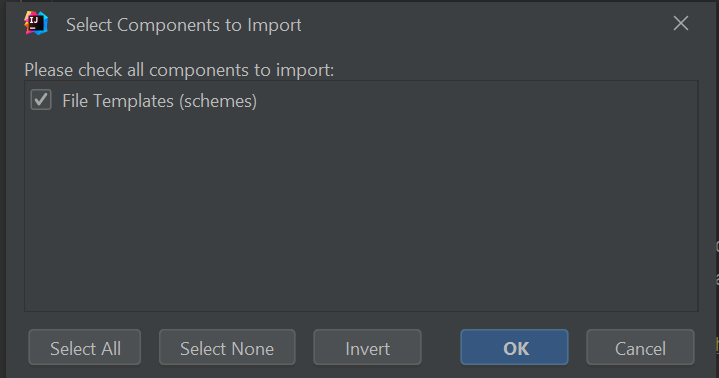
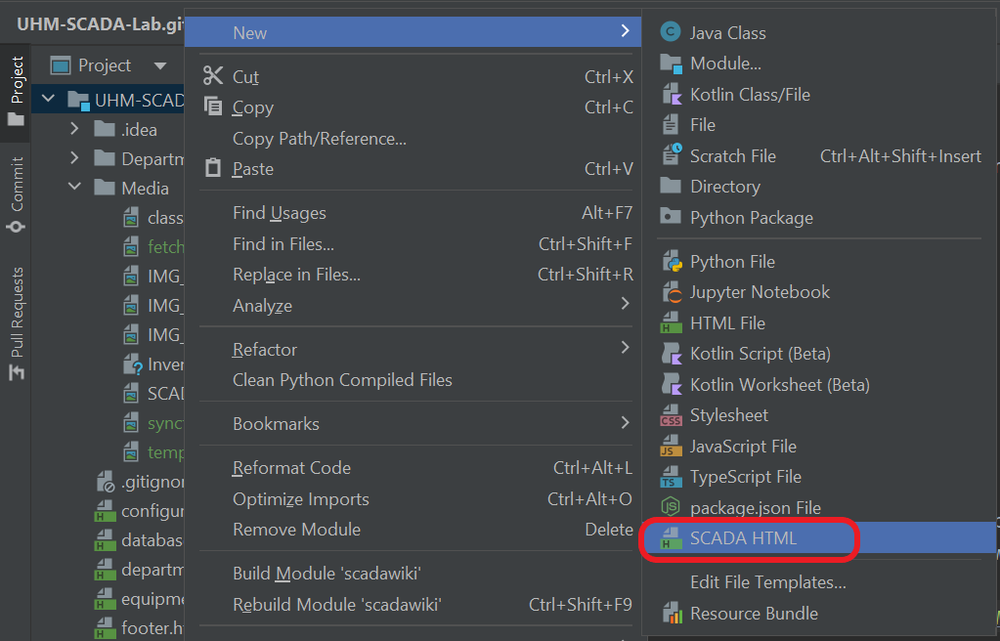

| Name | Position |
|---|---|
| Eliya | Lead |
| Arthur | Assistant |
| AJ | Assistant |
These are the standard development tools utilized by our team to develop the website.
BEFORE ADDING ANY CHANGES, PLEASE MAKE SURE YOUR FORK IS UP TO DATE WITH THE MAIN REPOSITORY. This ensures that there will be minimal merge conflicts when the webmaster approves your updates.
To ensure that your fork is up to date, click Sync fork on your fork's Github page to retrieve any changes from the main repo to your fork.
On Github Desktop, open your forked repository and make sure to click Fetch origin (or Fetch upstream, depending on your setup). This will update your local copy of the repository with all the latest changes.
Once you have verified that your fork and local copy are up to date, you can begin to make edits. To add a new page to the website, a new HTML file must be created within the appropriate folder in DepartmentPages. For example, the page for the ML Curricula team's zero trust documentation is stored at DepartmentPages/MachineLearning/zero-trust.html.
Each page file should use the same header structure that has been established for all the pages on the website. This will, among other things, allow for the page to have the same formatting as the pre-existing pages and import key components, such as the navigation bar and footer.
One option that you have is to copy and paste the HTML template below into your new file.
<!DOCTYPE html>
<html lang="en">
<head>
<meta charset="UTF-8">
<title>Title</title>
<script src="//code.jquery.com/jquery-1.10.2.js"></script>
<script>
$(function(){
$("#navbar").load("../../navbar.html");
$("#footer").load("../../footer.html");
});
</script>
<meta name="viewport" content="width=device-width, initial-scale=1">
<link href="https://cdn.jsdelivr.net/npm/bootstrap@5.2.0/dist/css/bootstrap.min.css" rel="stylesheet">
<script src="https://cdn.jsdelivr.net/npm/bootstrap@5.2.0/dist/js/bootstrap.bundle.min.js"></script>
<link rel="stylesheet" href="https://cdn.jsdelivr.net/npm/bootstrap-icons@1.8.3/font/bootstrap-icons.css">
<link rel="stylesheet" href="../../style.css"/>
</head>
<body>
<!-- Navbar -->
<div id="navbar"></div>
<!-- Your page code goes here -->
<!-- Footer -->
<div id="footer"></div>
</body>
</html>
You also have the option to import the template into your Intellij settings, which will allow you to easily create new HTML files with the code structure already included by default.
Download the settings ZIP file here, which includes our HTML template. In order to import it to Intellij, go to File > Manage IDE Settings > Import Settings... and select the ZIP file you just downloaded. You should see a prompt like this. Make sure File Templates (schemes) is checked, as shown below.
Intellij will then prompt you to restart the application for the changes to take effect.
Once that process is complete, you can now add new files to the repository with the template! Add a new file as shown below by selecting the SCADA HTML file type. You should then see a new file with the template code automatically included.
